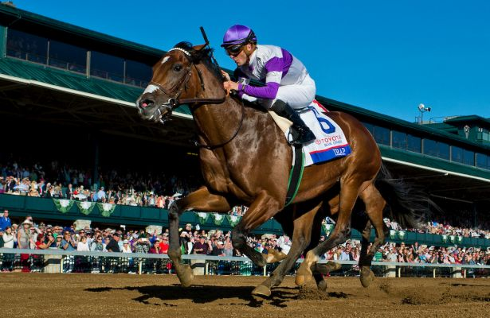

Irap Looks for Winning Form in Ohio Derby
By Francisco Cardona
With the 2017 Triple Crown series complete, the race for the title of Three-Year-Old Male Champion could not possibly be more wide-open. Remember that this year the only thing consistent about this high-profile division was that they were inconsistent. There were three different winners of the 2017 Kentucky Derby, Preakness, and Belmont Stakes and there were nine different horses that finished in the top three of those Triple Crown races. On the Derby Trail, it was rare for any horse to win two races in a row.
There are five or six horses that have a chance to sit atop the division in the end because this does not appear to be a year that another star like Arrogate will appear and become the dominant sophomore with exceptional performances in the second half of 2017.
The three-year-olds have limited opportunities to grab leadership in the division and a victory in any of these major races will be very significant.
•The nine-furlong Haskell (G1) will be run on July 30th at Monmouth Park.
•The ten-furlong Travers (G1) is scheduled for August 26 at Saratoga and its prep race, the Jim Dandy (G2), is the day before the Haskell.
•The Pennsylvania Derby has achieved grade one status, which makes the mile and an eighth stake even more significant. The Parx signature event is slated for September 23.
•The Breeders’ Cup will be run at Del Mar on November 3 and 4. The Classic does not look like a spot for this year’s sophomores and they may be more interested in the Dirt Mile (G1) in order to avoid the likes of Arrogate, Gun Runner, and Shaman Ghost. This race will be run around two turns and gives a chance to add a victory against older males.
•The Clark Handicap (G1) at Churchill Downs goes nine furlongs and comes on November 24th, with another opportunity to get a victory against older horses.
Meet Francisco Cardona
Francisco Cardona has been on the At The Wire staff since 2011 and currently serves as Assistant Editor. Francisco covers Aqueduct, Belmont Park, Monmouth Park, and Saratoga in his two ATW blogs Racing at the Jersey Shore and New York State of Racing. Francisco Cardona’s articles and tweets frequently appear in the America’s Best Racing weekly Notebook. In 2012 he became a voter in the NTRA weekly polls for the Top Thoroughbred and Top Three-Year-Old.